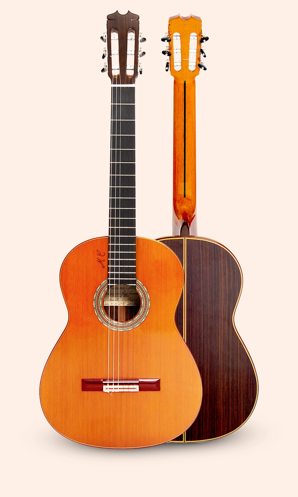

Inicio / Clásicas
La voz
de la guitarra clásica.
Guitarras clásicas de concierto construidas en Madrid con la misma dedicación y pasión que nos ha caracterizado desde 1915.
Clásicas
7 modelos,
una sola mano.
Construidas artesanalmente, numeradas consecutivamente, con cabeza de media luna e iniciales MC a fuego en la tapa.

Pozuelo clásica caoba
Timbre dorado y cálido, con una proyección generosa en sala.
Desde 4.840 €
Pozuelo clásica palo santo
Una de las piezas más singulares del taller, de gran profundidad sonora.
Desde 4.840 €
EC-1
Tercera clásica de timbre redondo y respuesta cómoda para el recital.
Desde 6.655 €
EC-3
Precisión y color en todos los registros, con la construcción tradicional de la casa.
Desde 9.075 €
AC-23
Equilibrio entre ataque y cuerpo, pensada para una carrera de escenario.
Desde 12.100 €
AC-23/R
Variante de la AC-23 con un carácter sonoro ligeramente más oscuro.
Desde 13.310 €
Dedicación clásico
Construida para un intérprete concreto, con decisiones de madera a medida.
Desde 24.200 €El oficio
Lo que hay
detrás.
Nuestra filosofía artesanal
Desde el primer corte de madera hasta el último pulido, cada guitarra clásica de concierto es una obra de arte hecha a mano. Mantienen la esencia de la escuela madrileña y de la legendaria casa Conde Hermanos, con la cabeza de media luna y las iniciales MC grabadas a fuego en la tapa y etiquetas escritas a mano.
Selección de maderas y materiales
Elegimos personalmente cada pieza de palosanto de India, arce, koa o Madagascar para aros y fondo. Para la tapa ofrecemos pino abeto alemán o cedro rojo: el abeto aporta brillo y proyección, el cedro calidez y profundidad. El mástil, generalmente de cedro, y el diapasón de ébano garantizan comodidad y estabilidad.
Modelos de guitarras clásicas de concierto
Pozuelo Clásica combina tradición y modernidad con tapa de abeto macizo y aros y fondo de palosanto de India o caoba. EC-1 y EC-3 destacan por elegancia y versatilidad. AC-23 y AC-23/R son nuestras joyas de gama alta, con maderas poco comunes como arce, koa o Madagascar.
Sonido y sensaciones
Buscamos equilibrio, proyección y riqueza tímbrica: graves profundos, agudos cristalinos y una respuesta dinámica que permita expresar toda la gama de emociones de la música clásica. La acción de las cuerdas, la ergonomía del mástil y el peso equilibrado se cuidan al detalle.
Reconocimiento y trayectoria
Nuestras guitarras han sido elegidas por grandes intérpretes de la música clásica y por músicos de todo el mundo que buscan un instrumento fiable, bello y con un sonido inconfundible.
Personalización y exclusividad
Cada guitarrista es único: se pueden elegir maderas y acabados, el tiro de cuerdas (650 mm o 664 mm), el tipo de clavijero y detalles como la roseta, inspirada en los modelos históricos del taller. Todas nuestras guitarras están numeradas y certificadas.